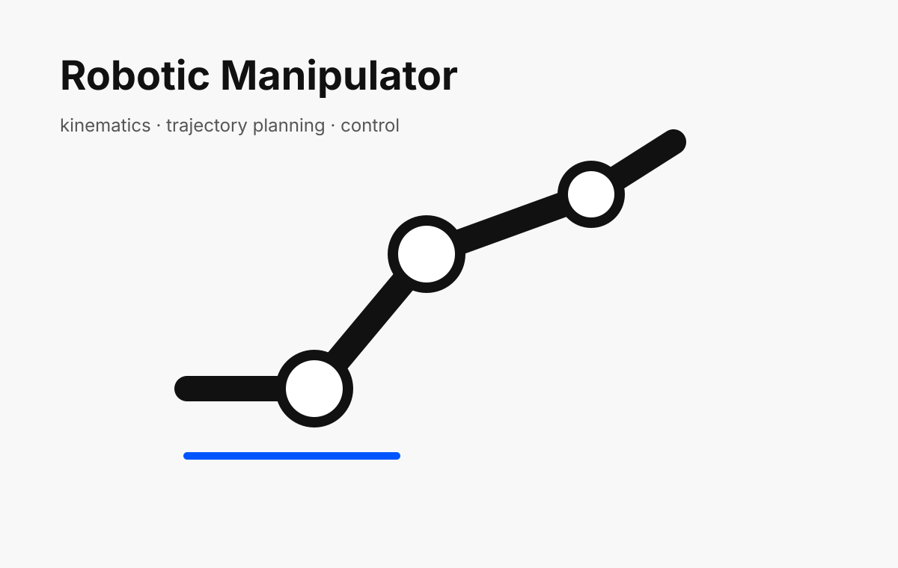

Manipulation · Kinematics · AI Integration
3-DOF Robotic Arm with Path Planning and AI Integration
A robotic arm project involving forward/inverse kinematics, path planning, MATLAB/ROS-style control, and AI-driven tic-tac-toe interaction.

Problem
Robotic manipulators require accurate kinematic models and usable control interfaces before higher-level autonomy or AI interaction can be added.
Role
Robotics developer
Aug 2024 – Dec 2024
My Contribution
- Modeled forward and inverse kinematics for a 3-axis manipulator.
- Built an interface for interactive joint and path control.
- Explored path planning algorithms including A* and RRT.
- Extended the arm into an AI-integrated tic-tac-toe demonstration using ChatGPT and Gemini as decision makers.
System Architecture
- Manipulator model
- Kinematic solver
- Trajectory generation
- GUI/control layer
- AI decision layer for tic-tac-toe demo
Results
- Implemented core manipulator modeling and control concepts.
- Demonstrated path planning behavior on a 3-DOF arm.
- Built an AI-integrated robotics demo showing the same physical/simulated arm executing decisions from competing LLM agents.
Why it matters
This project connects core robotics engineering skills—sensing, modeling, control, simulation, and integration—with the type of systems thinking needed for autonomous and humanoid robots.